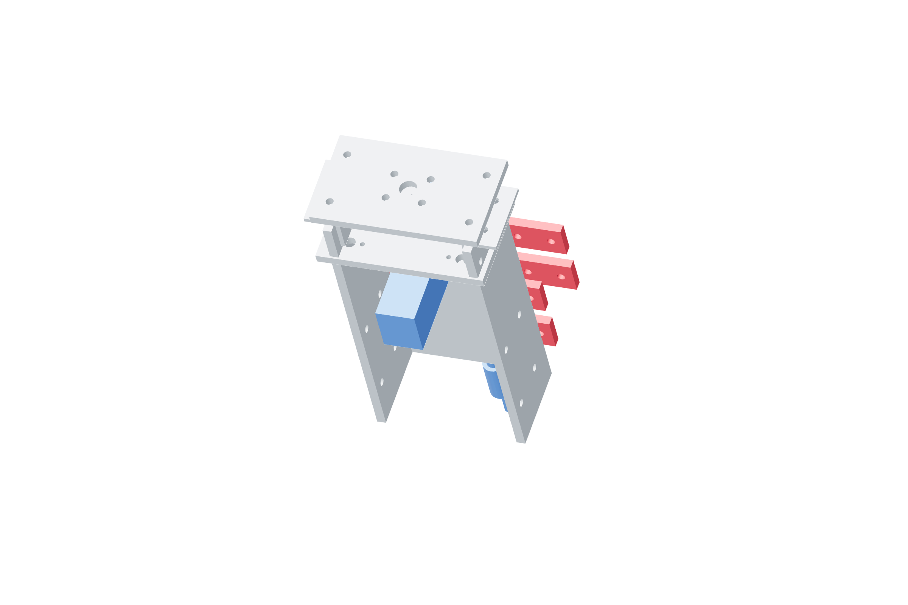

Payload / clamp100 / 179
Seat the adjustable gun clamp
Progressive opposed tightening keeps the body centered without relying on a shaped print matching an unmeasured gun.
AddNo new parts
Tools / setup4 mm hex · 8 mm wrench · independent support

- Bring opposite nuts into pad contact in small alternating increments.
- Stop when the body cannot shift under a gentle hand check. Do not crush the body or compress a control.
- Install the independent gun tether/catch to metal anchors, keeping it clear of the wire path.
- Verify clamp and tether with the gun supported; label the observed gun/tool transform for later calibration.
Gun remains cold
Laser emission remains disabled; the workpiece is removed. Every catch attachment is metal-backed.
Ready when
The actual gun cannot slide in the padded metal clamp, and its independent catch arrests a released load before any collision. Movement, body distortion or a catch outside the fall envelope fails payload installation. Correct the metal/pad/catch arrangement before removing support.